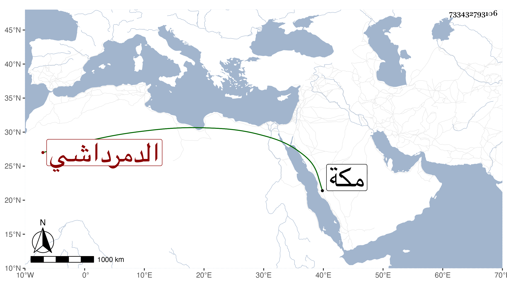

0902Sakhawi.DawLamic.ITO20230111-ara1.EIS1600.733432793106
Biography ID: 733432793106
90
بلبان الدمرداشي أخو حمزة بن محمد المدعو طوغان الآتي وهذا الاكبر واسمه علي ، ممن قرأ القرآن ظاهرا بل قال إنه جوده في مجاورته بمكة فانه حج وجاور غير مرة وجود الكتابة بها وبالقاهرة ، واشتغل بعلم الهيئة ولزم التردد لجانبك الجداوي ولذا أخرج الظاهر خشقدم أقطاعه بعد قتله فلما استقر تمربغا أعاده بل عمله خاصكيا ثم لما امتحن أخوه كما ستأتي الاشارة إليه في أيام الأشرف محى اسمه ثم عمله في سنة خمس وتسعين ساقيا وكان أيضا ممن انتمى لخشقدم الزمام وقتا في استدارية الوجهين القبلي والبحري ، وسافر في عدة تجاريد وسمع مني أشياء وكان أحد الراكزين بمكة في سنة ست وتسعين والتي بعدها ونعم الرجل .
